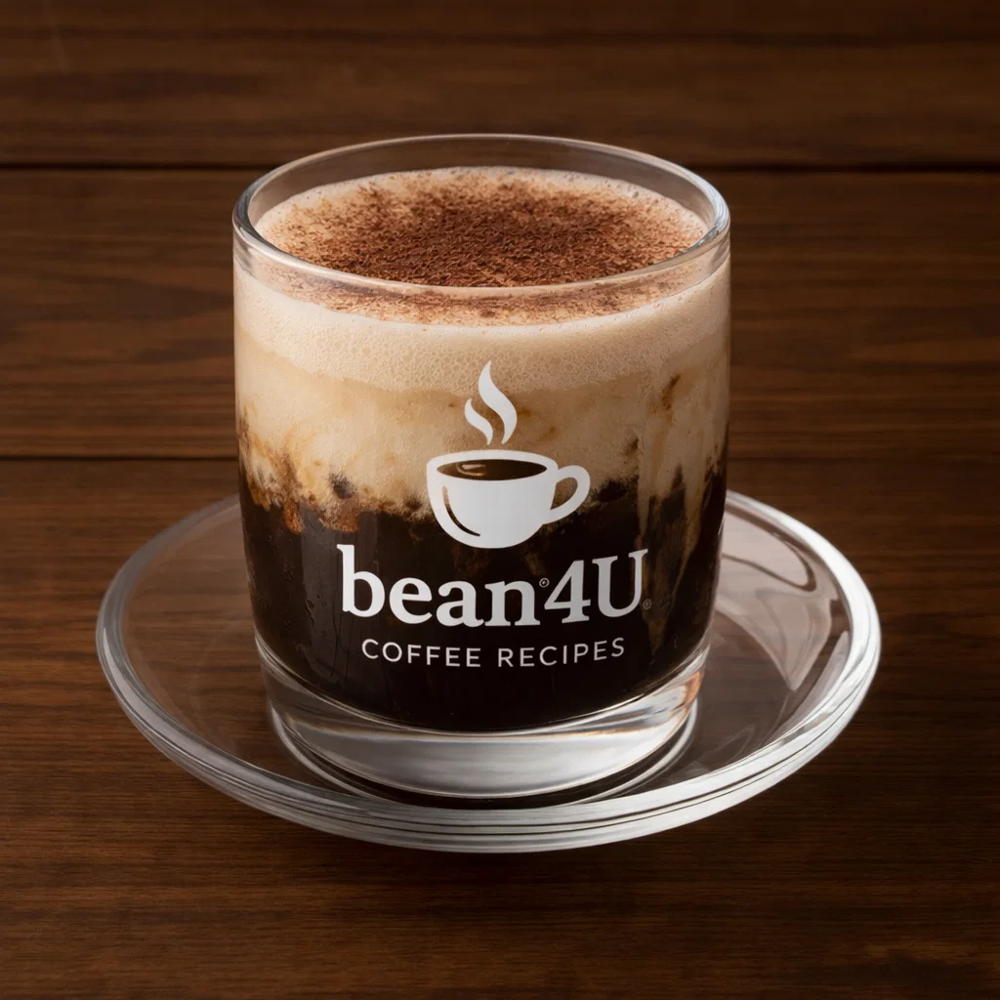

Café Rápido y Sucio

Ingredients
- 1 shot espresso
- Small splash of milk or crema (optional)
Preparation
- Serve espresso quickly; if desired, "dirty" it with a tiny splash of milk.
- Intended as a quick, strong coffee—no frills.
- youtube short quickly explaining it:
- short Explanation
Video from @streetcoffee
Channel